修改记录总清单（索引）
| 序号 | 模块与改动主题（点击跳转） | 端别 | 定位 / 触发路径 | 涉及文件与留痕形式 |
|---|---|---|---|---|
| 01 | 移动端学员端 · 评估任务、成绩与评估记录及反馈占位改造 | 移动端 | student-tdesign.html → 底部 Tab「评估」 |
移动端/student-tdesign.html、移动端/shared/tdesign-app.js、移动端/shared/tdesign-app.css · 图文对比（6 张） |
| 02 | 移动端督导专家端 · 督导任务与现场评分/拍照弹窗补齐 | 移动端 | supervisor-tdesign.html → 底部 Tab「督导任务」 |
移动端/supervisor-tdesign.html、移动端/shared/tdesign-app.js、移动端/shared/tdesign-app.css · 图文对比（3 张） |
| 03 | 移动端教师端 · 评估双页签重构、三段式表单编辑器与委员会权限控显隐 | 移动端 | teacher-tdesign.html → 底部 Tab「评估」 |
移动端/teacher-tdesign.html、移动端/shared/tdesign-app.js、移动端/shared/data/eval-tool-catalog.js · 图文对比（5 张） |
| 04 | 移动端课程开发 · 添加评估与添加反馈弹窗对齐 V1.2 规格 | 移动端 | teacher-tdesign.html → 课程开发 → 评估任务与课程反馈 |
移动端/shared/tdesign-app.js、移动端/shared/data/eval-tool-catalog.js、移动端/shared/tdesign-app.css · 图文对比（3 张） |
| 05 | 移动端科室管理员端（修正版方案 B）· 评估工作台/任务、首页审核与出科二级选表 | 移动端 | department-manager-tdesign.html → 评估 Tab / 首页服务 / 轮转工作台 |
移动端/department-manager-tdesign.html、移动端/shared/tdesign-app.js、移动端/shared/data/milestone-workflow.js · 图文对比（4 张） |
| 06 | 移动端院级/基地管理员 · 表单开发任务与院级专属二级审核弹窗（含 PC 轮转任务与考核滚动条清理说明） | 双端 | admin-tdesign.html → 工作台「表单开发任务」；PC 轮转任务与考核 |
移动端/admin-tdesign.html、移动端/shared/admin-tdesign-app.js、pages/轮转任务与考核/page.css · 图文对比（2 张） |
01. 移动端学员端 · 评估任务、成绩与评估记录及反馈占位改造
定位：学员端（student-tdesign.html） → 底部 Tab「评估」（评估任务 / 成绩与评估记录 / 反馈与学习计划）。实现文件：student-tdesign.html、tdesign-app.js、tdesign-app.css、eval-summative.js。
修改前 · 存在问题
- 旧版学员端评估页仅展示简略的静态卡片与历史记录，缺少与 PC 端对齐的三段式导航（评估任务 / 成绩与评估记录 / 反馈与学习计划）。
- 缺少按年度评估计划自动带出当前轮转指导医师的「发起评估」弹窗（含 360° 多选表单、S05/S06 等任务分支）。
- 成绩单缺少「形成性评估 / 课程评估 / 出科成绩 / OSCE 成绩」分类汇总、OSCE 考站报告与正式表单只读明细，也无「申请复核」流程。
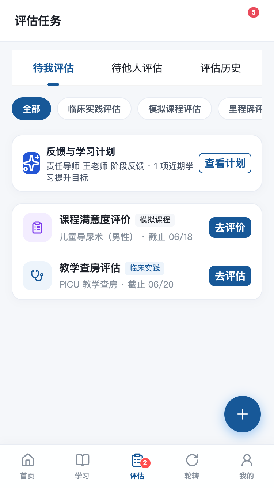
修改后 · 改动说明
- 三段式子导航重构：上线「评估任务」「成绩与评估记录」「反馈与学习计划」三大页签；评估任务细分「待我评估 / 待他人评估」与「全部 / 待完成 / 已完成」状态筛选，支持一键提醒。
- 发起评估弹窗：点击右下角悬浮「+」打开
stuLaunchPopup，读取年度评估计划自动带出当前在轮指导医师与可选评估表单（含 360° 多表勾选）。 - 成绩与评估记录 + 复核闭环：按形成性、课程、出科（理论/技能/大病历分 Tab）、OSCE 四类汇总，复用
fd-form-sheet展示只读量表明细；对老师完成的临床/课程评估支持发起「申请复核」弹窗并回写状态。 - 反馈与学习计划规范占位：明确 R2C2 反馈记录与个人学习计划建设中占位状态，避免虚假 mock 数据误导。
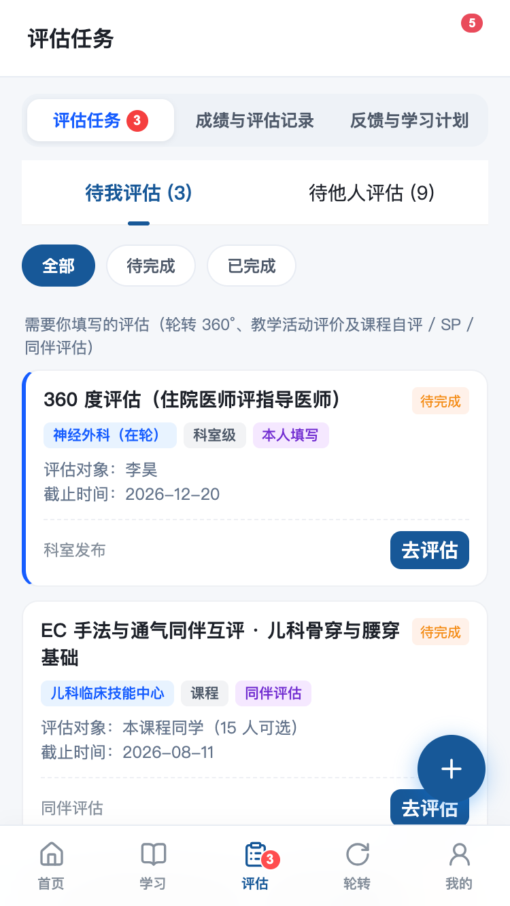
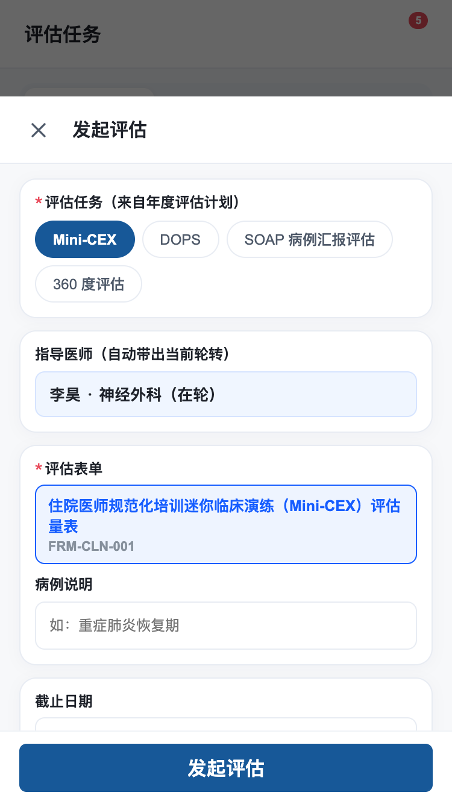
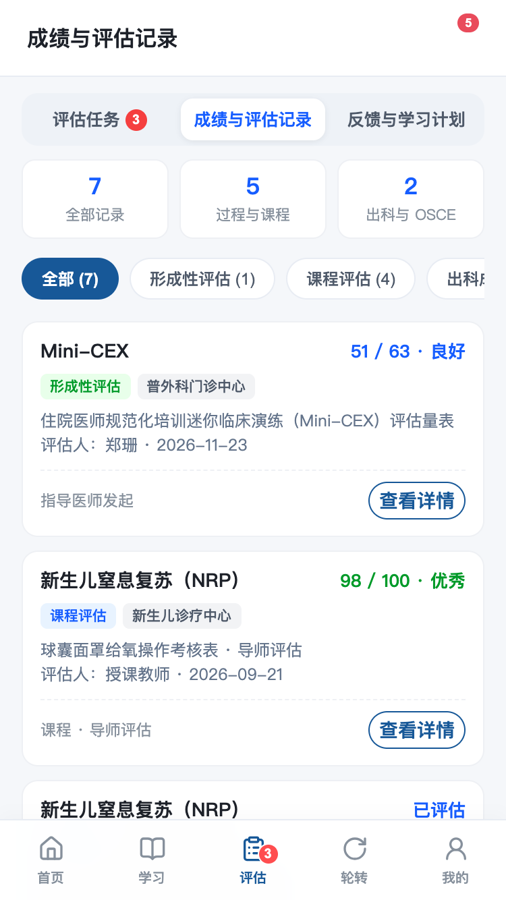
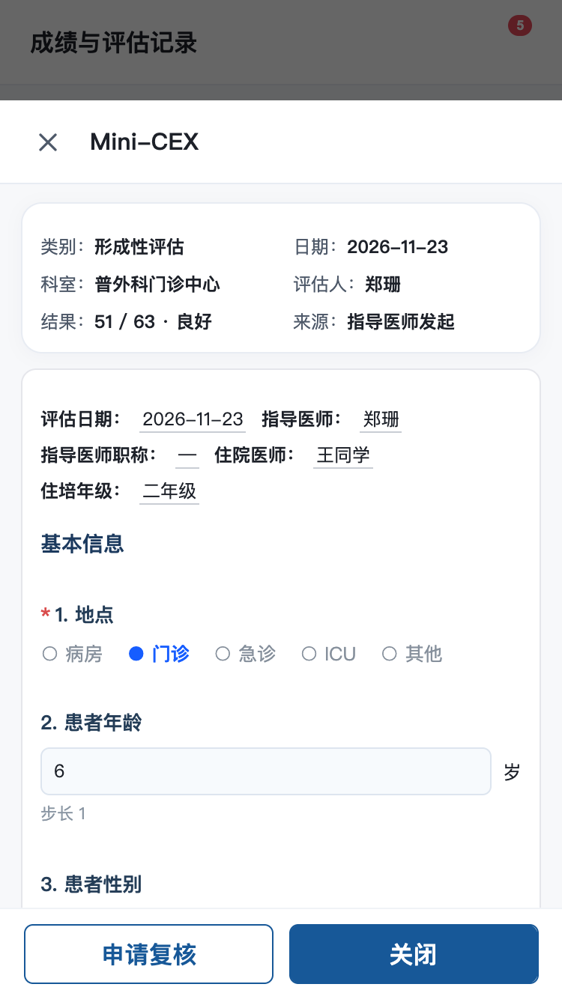
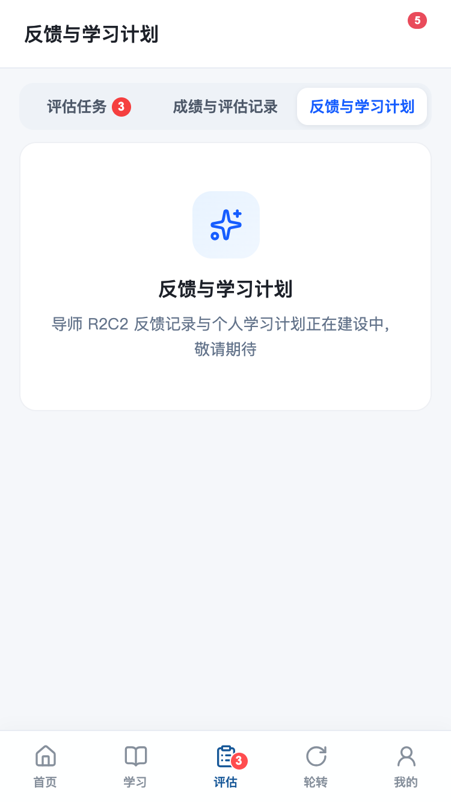
02. 移动端督导专家端 · 督导任务与现场评分/拍照弹窗补齐
定位：督导专家端（supervisor-tdesign.html） → 底部 Tab「督导任务」及现场评分弹窗。实现文件：supervisor-tdesign.html、tdesign-app.js、tdesign-app.css。
修改前 · 存在问题
- 督导专家端「督导任务」页与教学日历数据未完整联动，缺乏当前督导周期指标（至少督导次数 / 已督导 / 待督导计数）。
- 缺少完整的现场督导评分弹窗：无法在移动端切换「线上逐项评分」与「纸质表拍照上传」，也缺少 1~5 分评分细则展开与现场拍照留痕。
修改后 · 改动说明
- 督导任务与教学日历双向同步：顶部周期进度条展示本周期督导要求与已/待督导计数；「待督导 / 已完成」双 Tab 共用
EvalSupervision数据源（含日历自选与教研室指派场次）。 - 现场评分与纸质拍照弹窗：
supTaskModalVisible支持「线上逐项评分」（1–5 分维度卡、默认展开评分细则）与「纸质表拍照上传」（百分制总分 + 必传现场拍照）两种评分模式；出科考核场次支持核验「考核按要求完成」开关。 - 多图留痕与只读回看：支持现场拍照/选图预览与删除，已完成记录切换为只读总评 hero 与分项进度条展示。
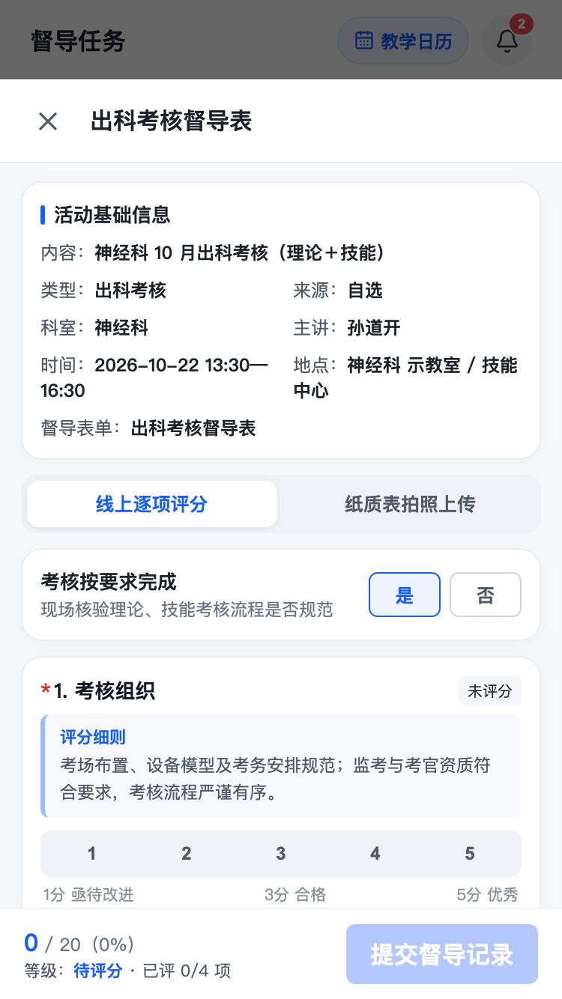
03. 移动端教师端 · 评估双页签重构、三段式表单编辑器与委员会权限控显隐
定位：教师端（teacher-tdesign.html） → 底部 Tab「评估」（评估任务 / 表单开发任务 / 委员会工作）。实现文件：teacher-tdesign.html、tdesign-app.js、eval-tool-catalog.js、milestone-workflow.js。
修改前 · 存在问题
- 教师端「评估」Tab 仅保留单一的旧版评估任务列表，缺少学员复核改判、出科技能考官打分、同行评议接单与 OSCE 考站提醒的统一承载。
- 移动端无「表单开发任务」工作流与手机端表单编辑器，无法承接表单接收、草稿搭建与提审。
- 临床能力委员会工作未在教师端按委员权限动态显隐。
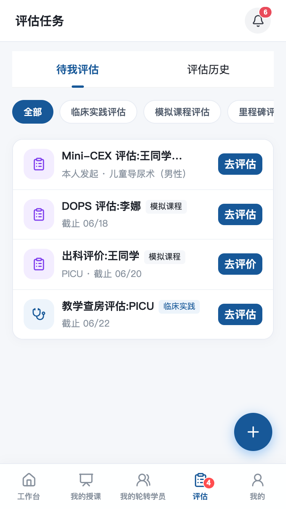
修改后 · 改动说明
- 评估任务全聚合：支持「待我评估 / 待他人评估」双 Tab 切换，覆盖轮转临床评估、出科技能考官打分（EXS）、同行评议接单/拒绝（RQT）、学员复核改判（
needReview高亮条）及 OSCE 考站提醒，并可按年度计划自动带出带教学员发起评估。 - 表单开发任务与三段式编辑器：新增「表单开发任务」视图（全部 / 待接收 / 开发中 / 审核中 / 已入库）及自主新建申报弹窗；全屏三段式编辑器（
1. 基础与规则 / 2. 题目与评分 / 3. 标注与预览）支持表头字段、及格线/等级/扣分/一票否决规则、题块增删与手机端实时预览提审。 - 委员会工作权限控显隐：顶部子导航「委员会工作」受
isCommitteeMember严格控制显隐（非委员自动切换为双栏），仅展示分配给当前委员复核的里程碑例外/申诉个案（「待复核 / 已复核」）。
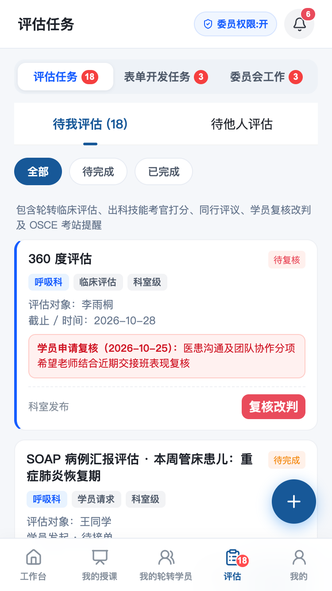
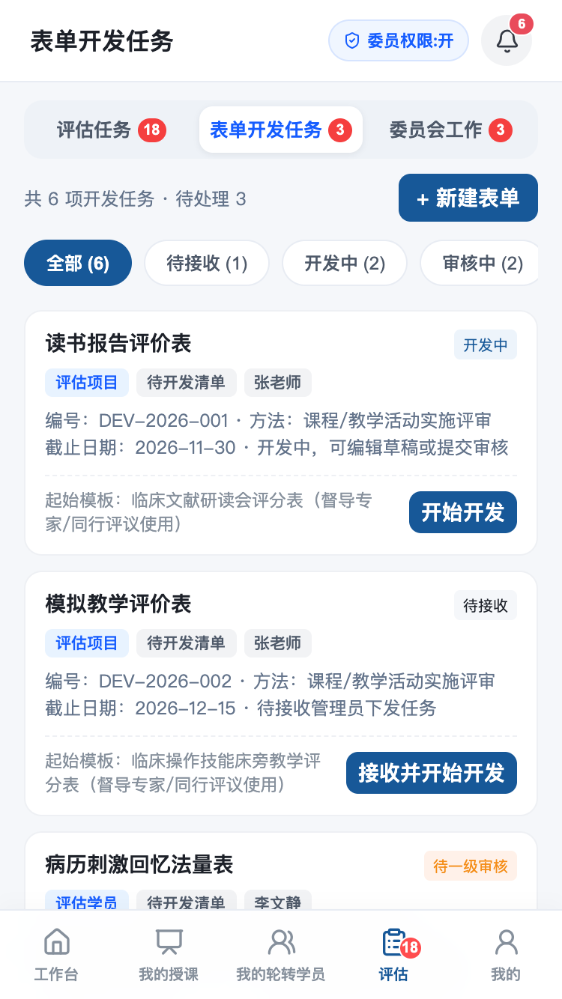
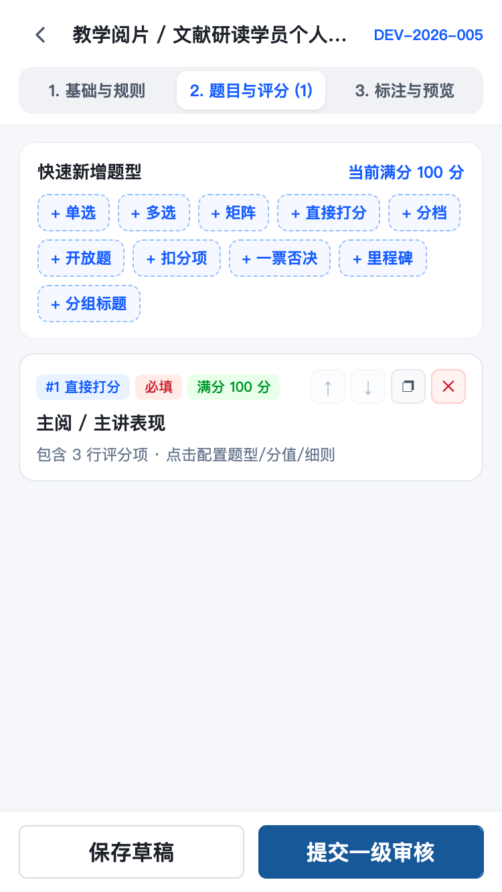
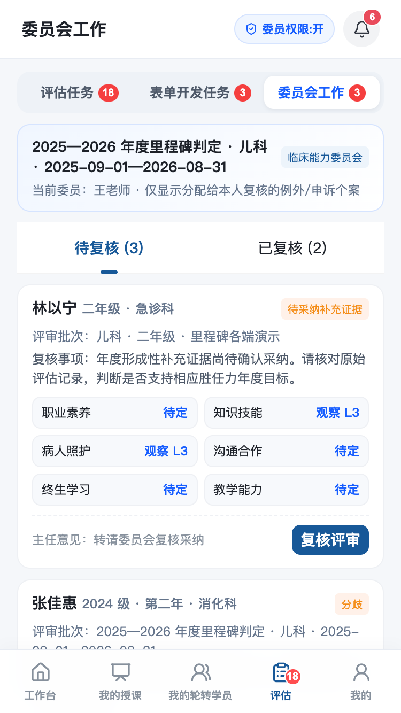
04. 移动端课程开发 · 添加评估与添加反馈弹窗对齐 V1.2 规格
定位：教师端 / 科室管理员端 → 首页「课程开发」 → 课程详情「评估任务与课程反馈」 → 「+ 添加评估」/「+ 添加反馈」。实现文件：tdesign-app.js、eval-tool-catalog.js、tdesign-app.css。
修改前 · 存在问题
- 移动端课程开发仅保留基础课程信息与简易任务展示，缺乏与 PC 端 V1.2 一致的两步式「添加评估 / 添加反馈」交互弹窗。
- 无法区分「评估（仅评估学员）」与「反馈（仅评估项目/教师）」的表单库选表口径，缺少国标/基地表单锁定提示与派生副本机制。
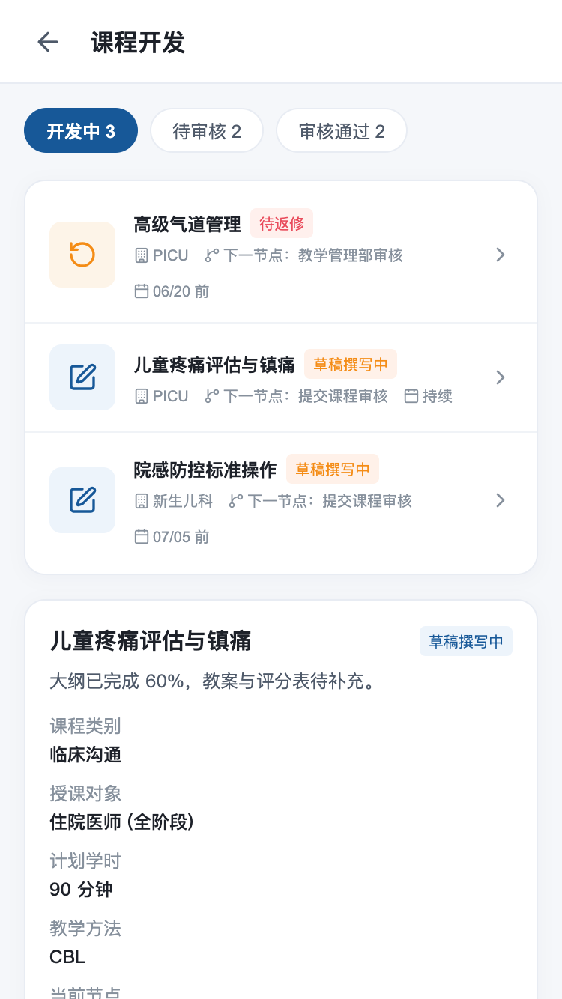
修改后 · 改动说明
- 两步完整交互弹窗（
mEvalComposerVisible）：Step 1「确定评估/反馈表单」（支持新建：空白手工 / 上传识别 / AI 生成，或从评估表单库选择/导入）；国标与基地指标表单保持结构锁定，支持一键「派生为本课程表单」后编辑条目。 - 严格选表口径隔离：表单库导入弹窗（
mEvalImportVisible）按模式硬过滤——「添加评估」仅列评估学员表单；「添加反馈」仅列评估项目/评估教师表单（可切换全部/项目/教师），绝不混入评估学员表。 - V1.2 任务设置分化：Step 2 中「添加评估」必选关联课程目标，支持填写人（授课教师/学员自评/SP/同伴学员）、基线/形成性（频次）/终结性（合格线+计入成绩）、结果可见时机；「添加反馈」自动映射评价对象（课程/授课教师）、频次（整门课/每课时）与匿名开关，并共用相对开课/结课的开放与截止时间推导。
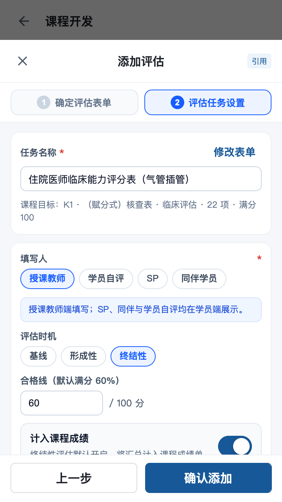
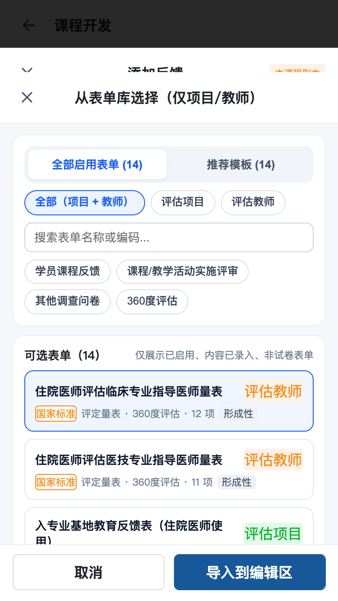
05. 移动端科室管理员端（修正版方案 B）· 评估工作台/任务、首页审核与出科二级选表
定位：科室管理员端（department-manager-tdesign.html） → 底部 Tab「评估」/ 首页「里程碑审核」「表单开发审核」「督导反馈」/ 轮转与出科考核。实现文件：department-manager-tdesign.html、tdesign-app.js、milestone-workflow.js。
修改前 · 存在问题
- 科室管理员端评估 Tab 未与首页审核服务解耦，缺少面向在科住院医师与教学活动的「评估工作台」及「科室评估任务」双分段视图。
- 首页缺少「里程碑审核」「表单开发审核（学科主任一级审核）」「督导反馈与档案补正」独立闭环入口。
- 出科考核发布缺少符合终结性赋分规则的二级「选择评估表单」弹窗。
修改后 · 改动说明
- 修正版方案 B 纯净双分段评估页：评估 Tab 收口为「评估工作台」（支持在科学员列表进度矩阵/一键催办 & 教学活动列表/督导反馈联动）与「科室评估任务」（完成进度条、发起评估、仅看逾期、指派导师/安排同行评议）。
- 首页科室三大审核服务闭环：「里程碑审核」支持核对六大胜任力证据与评价记录并确认建议或转交委员会复核；「表单开发审核」完成学科主任一级审核（预览摘要、通过交院级二审或退回）；「督导反馈」支持按周期查看教研室汇总与档案退回补正。
- 出科考核发布与二级选表弹窗：出科评价/轮转工作台支持配置理论与技能考核，二级弹窗
deptFormPickerPopup严格仅列出已启用、终结性、逐项赋分（有满分）且适用本基地的技能评估表。
06. 移动端院级/基地管理员 · 表单开发任务与院级专属二级审核弹窗（含 PC 轮转任务与考核滚动条清理说明）
定位：院级/基地管理员端（admin-tdesign.html） → 工作台「表单开发任务」；PC 端 pages/轮转任务与考核/page.css。实现文件：admin-tdesign.html、admin-tdesign-app.js、eval-tool-catalog.js、pages/轮转任务与考核/page.css。
修改前 · 存在问题
- 移动端院级/基地管理员工作台缺少「表单开发任务」管理入口，无法在手机端查看表单开发进度与表单预览摘要，院级管理员也无法完成待二审表单的入库审批。
- PC 端
pages/轮转任务与考核/page.css中存在针对.main-inner的强制overflow-y: scroll及自定义滚动条覆盖样式，导致长页面出现多余的双滚动条干扰。
修改后 · 改动说明
- 表单开发任务列表与只读/审核权限分离：管理端工作台「评估管理」新增「表单开发任务」入口（接入
eval-tool-catalog.js、eval-tool-dev.js、eval-form-sheet.js）。基地管理员仅可查看进度、两级审核记录与表单预览摘要（页面提示二级审核与入库由院级管理员处理，不渲染二审弹窗）。 - 院级专属二级审核弹窗（
showToolDevReviewModal）：院级管理员（isHospitalAdmin）对「待二级审核」任务可唤起专属二级审核弹窗，核验一审记录与fd-form-sheet摘要后，选择「审核通过并入库」或「退回修改」并调用EvalToolDev.review回写入库状态。 - PC 轮转任务与考核滚动条清理：清理
pages/轮转任务与考核/page.css中冗余的.main-inner强制滚动条与自定义 scrollbar 样式（移除 28 行），恢复全站统一的页面主滚动条体验。
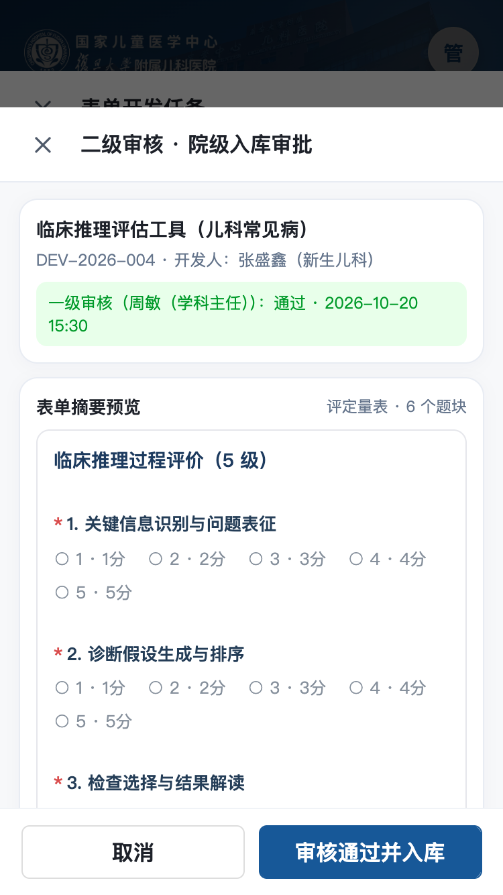